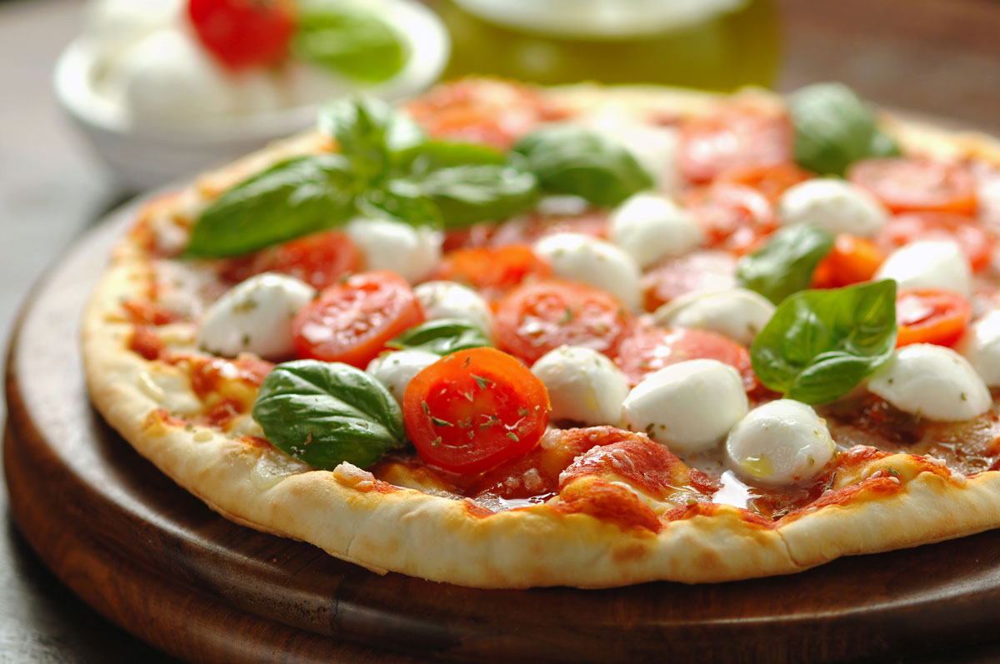

Napels, Italy
In the 1600's, the poor lazzarini could not afford food. They needed to find cheap ways to make ends meet, and flatbreads with various toppings, eaten for any meal and sold by street vendors or informal restaurants met this need. This came to be known as pizza.
First Pizzeria
The first official pizzeria, Antica Pizzeria Port'Alba, was opened in 1830
How did pizza become popularized?
When Queen Margherita of Italy visited the Naples in 1889, she wanted to experiment a new kind of food. She tried the street food and instantly loved it, eventually popularizing Pizza for the world.
Global Spread
In the 1900's, Naples immigrants began establishing pizza in the US. The first documented United States pizzeria was G. Lombardi’s on Spring Street in Manhattan. After World War II, pizza’s popularity boomed in the United States!
Mass Production
In 1957, Celentano's began marketing frozen pizzas and pizzas soon became the most popular of all frozen meals. Today, the pizza business brings in an estimated $32 billion in revenue, with over 3 billion pizzas sold each year in the United States.

Italy
Scilia
Sicilian pizza is made on a thick, bread-like crust, with a heavy sauce. It is usually made in a rectangular pan and cut into squares.
Rome
Roman pizza is called “pizza bianca,” meaning white pizza. There are a couple different versions of this, but none of them include tomato sauce.

U.S.A
New York
In New York, the American epicenter, pizza maintains its traditional form. The crust is thin and soft, topped with tomato sauce and cheese. Other popular toppings include sausage, mushrooms, peppers and onions, but pepperoni is the most popular pizza topping in the entire country.
Chicago
The best Chicago-style pizza is called deep dish. It involves several layers of toppings, like a stuffed pie, and the sauce is layered on top of the cheese.
California
Californians placed an emphasis on vegetables to attract the attention of trendy vegetarians. In California, pizza also went high-end, with caviar toppings.
Spain
The pizza in Spain, called coca, is made with slightly lighter dough than in Italy, and it is often rolled out very thin. Like other Spanish dishes, coca leans toward a spicy, peppery flavor to make it authentic.
Mediterranean
Down the Mediterranean shore, manakish is the pizza of Lebanon, and it is a popular breakfast food.
Japan
In Japan, okonomiyaki is a dish that resembles pizza in that it is a rather free-form group of toppings on a flat, circular base. Okonomiyaki is built on a disc of shredded cabbage cooked in a batter similar to pancake.
The Crazy Things You Never Knew About Pizza!
- Americans eat approximately 100 acres of pizza a day or about 350 slices per second.
- October is the US national pizza month.
- Domino's Pizza is the world leader in delivery.
- The longest pizza delivery was from Cape Town, South Africa to Sydney, Australia.
- About 3 billion pizzas are sold annually in the U.S.
- Fun Fact: Margherita pizza was named after the Queen!